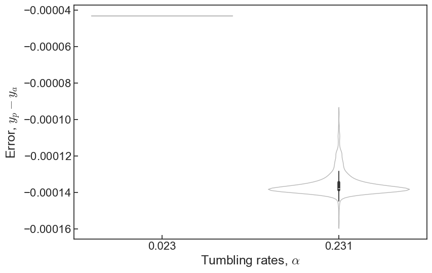

<!DOCTYPE html>
<html xmlns="http://www.w3.org/1999/xhtml" lang="en" xml:lang="en"><head>

<meta charset="utf-8">
<meta name="generator" content="quarto-1.4.551">

<meta name="viewport" content="width=device-width, initial-scale=1.0, user-scalable=yes">

<meta name="author" content="NP">
<meta name="dcterms.date" content="2024-02-21">

<title>Dissipation Learning in Active Matter - Week 16</title>
<style>
code{white-space: pre-wrap;}
span.smallcaps{font-variant: small-caps;}
div.columns{display: flex; gap: min(4vw, 1.5em);}
div.column{flex: auto; overflow-x: auto;}
div.hanging-indent{margin-left: 1.5em; text-indent: -1.5em;}
ul.task-list{list-style: none;}
ul.task-list li input[type="checkbox"] {
  width: 0.8em;
  margin: 0 0.8em 0.2em -1em; /* quarto-specific, see https://github.com/quarto-dev/quarto-cli/issues/4556 */ 
  vertical-align: middle;
}
/* CSS for syntax highlighting */
pre > code.sourceCode { white-space: pre; position: relative; }
pre > code.sourceCode > span { line-height: 1.25; }
pre > code.sourceCode > span:empty { height: 1.2em; }
.sourceCode { overflow: visible; }
code.sourceCode > span { color: inherit; text-decoration: inherit; }
div.sourceCode { margin: 1em 0; }
pre.sourceCode { margin: 0; }
@media screen {
div.sourceCode { overflow: auto; }
}
@media print {
pre > code.sourceCode { white-space: pre-wrap; }
pre > code.sourceCode > span { text-indent: -5em; padding-left: 5em; }
}
pre.numberSource code
  { counter-reset: source-line 0; }
pre.numberSource code > span
  { position: relative; left: -4em; counter-increment: source-line; }
pre.numberSource code > span > a:first-child::before
  { content: counter(source-line);
    position: relative; left: -1em; text-align: right; vertical-align: baseline;
    border: none; display: inline-block;
    -webkit-touch-callout: none; -webkit-user-select: none;
    -khtml-user-select: none; -moz-user-select: none;
    -ms-user-select: none; user-select: none;
    padding: 0 4px; width: 4em;
  }
pre.numberSource { margin-left: 3em;  padding-left: 4px; }
div.sourceCode
  {   }
@media screen {
pre > code.sourceCode > span > a:first-child::before { text-decoration: underline; }
}
</style>


<script src="../site_libs/quarto-nav/quarto-nav.js"></script>
<script src="../site_libs/quarto-nav/headroom.min.js"></script>
<script src="../site_libs/clipboard/clipboard.min.js"></script>
<script src="../site_libs/quarto-search/autocomplete.umd.js"></script>
<script src="../site_libs/quarto-search/fuse.min.js"></script>
<script src="../site_libs/quarto-search/quarto-search.js"></script>
<meta name="quarto:offset" content="../">
<script src="../site_libs/quarto-html/quarto.js"></script>
<script src="../site_libs/quarto-html/popper.min.js"></script>
<script src="../site_libs/quarto-html/tippy.umd.min.js"></script>
<script src="../site_libs/quarto-html/anchor.min.js"></script>
<link href="../site_libs/quarto-html/tippy.css" rel="stylesheet">
<link href="../site_libs/quarto-html/quarto-syntax-highlighting.css" rel="stylesheet" id="quarto-text-highlighting-styles">
<script src="../site_libs/bootstrap/bootstrap.min.js"></script>
<link href="../site_libs/bootstrap/bootstrap-icons.css" rel="stylesheet">
<link href="../site_libs/bootstrap/bootstrap.min.css" rel="stylesheet" id="quarto-bootstrap" data-mode="light">
<script id="quarto-search-options" type="application/json">{
  "location": "navbar",
  "copy-button": false,
  "collapse-after": 3,
  "panel-placement": "end",
  "type": "overlay",
  "limit": 50,
  "keyboard-shortcut": [
    "f",
    "/",
    "s"
  ],
  "show-item-context": false,
  "language": {
    "search-no-results-text": "No results",
    "search-matching-documents-text": "matching documents",
    "search-copy-link-title": "Copy link to search",
    "search-hide-matches-text": "Hide additional matches",
    "search-more-match-text": "more match in this document",
    "search-more-matches-text": "more matches in this document",
    "search-clear-button-title": "Clear",
    "search-text-placeholder": "",
    "search-detached-cancel-button-title": "Cancel",
    "search-submit-button-title": "Submit",
    "search-label": "Search"
  }
}</script>
<style>html{ scroll-behavior: smooth; }</style>


</head>

<body class="nav-fixed">

<div id="quarto-search-results"></div>
  <header id="quarto-header" class="headroom fixed-top">
    <nav class="navbar navbar-expand-lg " data-bs-theme="dark">
      <div class="navbar-container container-fluid">
            <div id="quarto-search" class="" title="Search"></div>
          <button class="navbar-toggler" type="button" data-bs-toggle="collapse" data-bs-target="#navbarCollapse" aria-controls="navbarCollapse" aria-expanded="false" aria-label="Toggle navigation" onclick="if (window.quartoToggleHeadroom) { window.quartoToggleHeadroom(); }">
  <span class="navbar-toggler-icon"></span>
</button>
          <div class="collapse navbar-collapse" id="navbarCollapse">
            <ul class="navbar-nav navbar-nav-scroll me-auto">
  <li class="nav-item">
    <a class="nav-link" href="../index.html"> 
<span class="menu-text">Home</span></a>
  </li>  
  <li class="nav-item">
    <a class="nav-link" href="../activity_log/landing.html"> 
<span class="menu-text">Activity log</span></a>
  </li>  
  <li class="nav-item">
    <a class="nav-link" href="../plots/landing.html"> 
<span class="menu-text">Plots</span></a>
  </li>  
  <li class="nav-item">
    <a class="nav-link" href="../training/landing.html"> 
<span class="menu-text">CNN</span></a>
  </li>  
  <li class="nav-item">
    <a class="nav-link" href="../writing/landing.html"> 
<span class="menu-text">Writing</span></a>
  </li>  
  <li class="nav-item">
    <a class="nav-link" href="../misc.html"> 
<span class="menu-text">Misc</span></a>
  </li>  
</ul>
          </div> <!-- /navcollapse -->
          <div class="quarto-navbar-tools">
    <a href="https://github.com/mstcl/msci-wiki" title="" class="quarto-navigation-tool px-1" aria-label=""><i class="bi bi-git"></i></a>
</div>
      </div> <!-- /container-fluid -->
    </nav>
</header>
<!-- content -->
<div id="quarto-content" class="quarto-container page-columns page-rows-contents page-layout-full page-navbar">
<!-- sidebar -->
<!-- margin-sidebar -->
    <div id="quarto-margin-sidebar" class="sidebar margin-sidebar">
        <nav id="TOC" role="doc-toc" class="toc-active" data-toc-expanded="99">
    <h2 id="toc-title">Content</h2>
   
  <ul>
  <li><a href="#tasks" id="toc-tasks" class="nav-link active" data-scroll-target="#tasks">Tasks</a></li>
  <li><a href="#summary" id="toc-summary" class="nav-link" data-scroll-target="#summary">Summary</a>
  <ul class="collapse">
  <li><a href="#tracking-progress-systematically" id="toc-tracking-progress-systematically" class="nav-link" data-scroll-target="#tracking-progress-systematically">Tracking progress systematically</a></li>
  <li><a href="#metrics" id="toc-metrics" class="nav-link" data-scroll-target="#metrics">Metrics</a></li>
  <li><a href="#previous-progress-and-old-strategy" id="toc-previous-progress-and-old-strategy" class="nav-link" data-scroll-target="#previous-progress-and-old-strategy">Previous progress and old strategy</a></li>
  <li><a href="#validating-our-code-and-figuring-out-the-effect-of-learning-rate" id="toc-validating-our-code-and-figuring-out-the-effect-of-learning-rate" class="nav-link" data-scroll-target="#validating-our-code-and-figuring-out-the-effect-of-learning-rate">Validating our code (and figuring out the effect of learning rate)</a></li>
  <li><a href="#filling-in-the-gaps" id="toc-filling-in-the-gaps" class="nav-link" data-scroll-target="#filling-in-the-gaps">Filling in the gaps</a></li>
  </ul></li>
  <li><a href="#reference-materials" id="toc-reference-materials" class="nav-link" data-scroll-target="#reference-materials">Reference materials</a></li>
  </ul>
</nav>
    </div>
<!-- main -->
<main class="content column-page-left" id="quarto-document-content">

<header id="title-block-header" class="quarto-title-block default">
<div class="quarto-title">
<h1 class="title">Week 16</h1>
</div>


<div class="quarto-title-meta column-page-left">

    <div>
    <div class="quarto-title-meta-heading">Author</div>
    <div class="quarto-title-meta-contents">
             <p>NP </p>
          </div>
  </div>
    
    <div>
    <div class="quarto-title-meta-heading">Published</div>
    <div class="quarto-title-meta-contents">
      <p class="date">February 21, 2024</p>
    </div>
  </div>
  
    
  </div>
  


</header>


<section id="tasks" class="level2">
<h2 class="anchored" data-anchor-id="tasks">Tasks</h2>
<ul class="task-list">
<li><label><input type="checkbox" checked="">Try and tune/optimize the models we’ve tested</label>
<ul>
<li>See <a href="#previous-progress-and-old-strategy">Previous progress and old strategy</a></li>
</ul></li>
<li><label><input type="checkbox" checked="">Come up with a set of metrics to evaluate our experiments</label>
<ul>
<li>See <a href="#metrics">Metrics</a></li>
</ul></li>
</ul>
</section>
<section id="summary" class="level2">
<h2 class="anchored" data-anchor-id="summary">Summary</h2>
<section id="tracking-progress-systematically" class="level3">
<h3 class="anchored" data-anchor-id="tracking-progress-systematically">Tracking progress systematically</h3>
<p>We made a <a href="https://cryptpad.fr/sheet/#/3/sheet/edit/7200dabe21ea346d966571a07eb6f33a/">spreadsheet table</a> to log and track different changes, and start anew, as last week we only designed basic experiments to see what we can potentially do. We also give the model a unique ID (randomly generated), to refer to them easier.</p>
</section>
<section id="metrics" class="level3">
<h3 class="anchored" data-anchor-id="metrics">Metrics</h3>
<p>To evaluate the models, we established some metrics and threshold:</p>
<ul>
<li>Mean absolute error
<ul>
<li><math display="inline" xmlns="http://www.w3.org/1998/Math/MathML"><semantics><mrow><mi>M</mi><mi>A</mi><mi>E</mi><mo>&lt;</mo><mn>0.01</mn></mrow><annotation encoding="application/x-tex">MAE &lt; 0.01</annotation></semantics></math></li>
</ul></li>
<li>Standard deviation (minimum, maxmimum and average of all <math display="inline" xmlns="http://www.w3.org/1998/Math/MathML"><semantics><mi>α</mi><annotation encoding="application/x-tex">\alpha</annotation></semantics></math>’s)
<ul>
<li><math display="inline" xmlns="http://www.w3.org/1998/Math/MathML"><semantics><mrow><msub><mi>σ</mi><mrow><mi>m</mi><mi>a</mi><mi>x</mi></mrow></msub><mo>&lt;</mo><mn>0.02</mn></mrow><annotation encoding="application/x-tex">\sigma_{max} &lt; 0.02</annotation></semantics></math></li>
<li><math display="inline" xmlns="http://www.w3.org/1998/Math/MathML"><semantics><mrow><msub><mi>σ</mi><mrow><mi>m</mi><mi>e</mi><mi>a</mi><mi>n</mi></mrow></msub><mo>&lt;</mo><mn>0.01</mn></mrow><annotation encoding="application/x-tex">\sigma_{mean} &lt; 0.01</annotation></semantics></math></li>
</ul></li>
<li>Overlap ratio within <math display="inline" xmlns="http://www.w3.org/1998/Math/MathML"><semantics><msup><mn>10</mn><mrow><mo>−</mo><mn>3</mn></mrow></msup><annotation encoding="application/x-tex">10^{-3}</annotation></semantics></math> (whether the prediction ranges cover the actual value)
<ul>
<li><math display="inline" xmlns="http://www.w3.org/1998/Math/MathML"><semantics><mrow><mi>O</mi><mo>=</mo><mn>1</mn></mrow><annotation encoding="application/x-tex">O = 1</annotation></semantics></math></li>
</ul></li>
<li>Pearson’s <math display="inline" xmlns="http://www.w3.org/1998/Math/MathML"><semantics><mi>r</mi><annotation encoding="application/x-tex">r</annotation></semantics></math> (this is only affective on a handful of <math display="inline" xmlns="http://www.w3.org/1998/Math/MathML"><semantics><mi>α</mi><annotation encoding="application/x-tex">\alpha</annotation></semantics></math>’s, using it on one or two data points is not very indicative of the model’s performance)
<ul>
<li><math display="inline" xmlns="http://www.w3.org/1998/Math/MathML"><semantics><mrow><mi>r</mi><mo>&gt;</mo><mn>0.975</mn></mrow><annotation encoding="application/x-tex">r &gt; 0.975</annotation></semantics></math></li>
</ul></li>
</ul>
</section>
<section id="previous-progress-and-old-strategy" class="level3">
<h3 class="anchored" data-anchor-id="previous-progress-and-old-strategy">Previous progress and old strategy</h3>
<p>From last week, model B was okay. It didn’t reduce the spread to the desirable metric after 10 epochs. This prompted us to tweak it slightly. Here were the different attempts:</p>
<ul>
<li>From the previous week, reducing dropout from 0.2 to 0.1.</li>
<li>Instead of training on one <math display="inline" xmlns="http://www.w3.org/1998/Math/MathML"><semantics><mi>ϕ</mi><annotation encoding="application/x-tex">\phi</annotation></semantics></math>, train on similar values to add to it more data (everything else kept the same).
<ul>
<li>Not much improvement. But I only compared between two runs, should do two more pairs and take the average.</li>
</ul></li>
<li>Increasing the number of filters and kernel size in the convolutional layer
<ul>
<li>No improvement, if not slightly worse, slow training times as there are now many more parameters. Still not descending after 10 epochs or so.</li>
</ul></li>
<li>Use LeakyReLU (ReLU but with small gradient when unit is inactive, apparently works well on regression)
<ul>
<li>LeakyReLU seems to be worse. We stick to ReLU for now.</li>
</ul></li>
<li>Apply a separate <code>ReLU()</code> layer after <code>Conv2D()</code> (which now has no activation). Apply <code>MaxPooling2D()</code> in between to reduce parameters.
<ul>
<li>This helps training speed but doesn’t improve nor degrade performance. For simple model we don’t need to use pooling so we can apply it when we declare the <code>Conv2D</code> layer.</li>
</ul></li>
<li>Adding more dense layers with non-linear activation.
<ul>
<li>Significantly more parameters, reduce training speed, no improvement</li>
</ul></li>
</ul>
<div class="sourceCode" id="cb1"><pre class="sourceCode numberSource python number-lines code-with-copy"><code class="sourceCode python"><span id="cb1-1"><a href="#cb1-1"></a><span class="co"># Before</span></span>
<span id="cb1-2"><a href="#cb1-2"></a>model.add(</span>
<span id="cb1-3"><a href="#cb1-3"></a>    Conv2D(</span>
<span id="cb1-4"><a href="#cb1-4"></a>        filters<span class="op">=</span><span class="dv">3</span>,</span>
<span id="cb1-5"><a href="#cb1-5"></a>        kernel_size<span class="op">=</span>(<span class="dv">3</span>, <span class="dv">3</span>),</span>
<span id="cb1-6"><a href="#cb1-6"></a>        padding<span class="op">=</span><span class="st">"same"</span>,</span>
<span id="cb1-7"><a href="#cb1-7"></a>        activation<span class="op">=</span><span class="st">"relu"</span>,</span>
<span id="cb1-8"><a href="#cb1-8"></a>        input_shape<span class="op">=</span>shape,</span>
<span id="cb1-9"><a href="#cb1-9"></a>    )</span>
<span id="cb1-10"><a href="#cb1-10"></a>)</span>
<span id="cb1-11"><a href="#cb1-11"></a>model.add(BatchNormalization())</span>
<span id="cb1-12"><a href="#cb1-12"></a></span>
<span id="cb1-13"><a href="#cb1-13"></a><span class="co"># After</span></span>
<span id="cb1-14"><a href="#cb1-14"></a>model.add(Conv2D(filters<span class="op">=</span><span class="dv">3</span>, kernel_size<span class="op">=</span>(<span class="dv">3</span>, <span class="dv">3</span>), padding<span class="op">=</span><span class="st">"same"</span>, input_shape<span class="op">=</span>shape))</span>
<span id="cb1-15"><a href="#cb1-15"></a>model.add(MaxPooling2D(pool_size<span class="op">=</span>(<span class="dv">2</span>, <span class="dv">2</span>), padding<span class="op">=</span><span class="st">"same"</span>))</span>
<span id="cb1-16"><a href="#cb1-16"></a>model.add(ReLU())</span>
<span id="cb1-17"><a href="#cb1-17"></a>model.add(BatchNormalization())</span></code><button title="Copy to Clipboard" class="code-copy-button"><i class="bi"></i></button></pre></div>
<p>Advising the models from <a href="https://www.kaggle.com/code/guidosalimbeni/regression-with-convolutional-neural-network-keras/notebook">here</a> and (here)[https://github.com/rsyamil/cnn-regression/blob/master/cnn_regression.ipynb]. We revise last weeks’ architecture to give:</p>
<div class="sourceCode" id="cb2"><pre class="sourceCode numberSource python number-lines code-with-copy"><code class="sourceCode python"><span id="cb2-1"><a href="#cb2-1"></a><span class="kw">def</span> make_net(shape):</span>
<span id="cb2-2"><a href="#cb2-2"></a>    model <span class="op">=</span> Sequential()</span>
<span id="cb2-3"><a href="#cb2-3"></a></span>
<span id="cb2-4"><a href="#cb2-4"></a>    model.add(Conv2D(filters<span class="op">=</span><span class="dv">3</span>, kernel_size<span class="op">=</span>(<span class="dv">3</span>, <span class="dv">3</span>), padding<span class="op">=</span><span class="st">"same"</span>, input_shape<span class="op">=</span>shape))</span>
<span id="cb2-5"><a href="#cb2-5"></a>    model.add(MaxPooling2D(pool_size<span class="op">=</span>(<span class="dv">2</span>, <span class="dv">2</span>), padding<span class="op">=</span><span class="st">"same"</span>))</span>
<span id="cb2-6"><a href="#cb2-6"></a>    model.add(ReLU())</span>
<span id="cb2-7"><a href="#cb2-7"></a>    model.add(BatchNormalization())</span>
<span id="cb2-8"><a href="#cb2-8"></a></span>
<span id="cb2-9"><a href="#cb2-9"></a>    model.add(Conv2D(filters<span class="op">=</span><span class="dv">4</span>, kernel_size<span class="op">=</span>(<span class="dv">4</span>, <span class="dv">4</span>), padding<span class="op">=</span><span class="st">"same"</span>))</span>
<span id="cb2-10"><a href="#cb2-10"></a>    model.add(MaxPooling2D(pool_size<span class="op">=</span>(<span class="dv">2</span>, <span class="dv">2</span>), padding<span class="op">=</span><span class="st">"same"</span>))</span>
<span id="cb2-11"><a href="#cb2-11"></a>    model.add(ReLU())</span>
<span id="cb2-12"><a href="#cb2-12"></a>    model.add(BatchNormalization())</span>
<span id="cb2-13"><a href="#cb2-13"></a></span>
<span id="cb2-14"><a href="#cb2-14"></a>    model.add(Conv2D(filters<span class="op">=</span><span class="dv">6</span>, kernel_size<span class="op">=</span>(<span class="dv">5</span>, <span class="dv">5</span>), padding<span class="op">=</span><span class="st">"same"</span>))</span>
<span id="cb2-15"><a href="#cb2-15"></a>    model.add(MaxPooling2D(pool_size<span class="op">=</span>(<span class="dv">2</span>, <span class="dv">2</span>), padding<span class="op">=</span><span class="st">"same"</span>))</span>
<span id="cb2-16"><a href="#cb2-16"></a>    model.add(ReLU())</span>
<span id="cb2-17"><a href="#cb2-17"></a>    model.add(BatchNormalization())</span>
<span id="cb2-18"><a href="#cb2-18"></a></span>
<span id="cb2-19"><a href="#cb2-19"></a>    model.add(GlobalAveragePooling2D())</span>
<span id="cb2-20"><a href="#cb2-20"></a></span>
<span id="cb2-21"><a href="#cb2-21"></a>    <span class="cf">with</span> options({<span class="st">"layout_optimizer"</span>: <span class="va">False</span>}):</span>
<span id="cb2-22"><a href="#cb2-22"></a>        model.add(Dropout(<span class="fl">0.1</span>))</span>
<span id="cb2-23"><a href="#cb2-23"></a></span>
<span id="cb2-24"><a href="#cb2-24"></a>    model.add(Dense(units<span class="op">=</span><span class="dv">128</span>, activation<span class="op">=</span><span class="st">"relu"</span>))</span>
<span id="cb2-25"><a href="#cb2-25"></a></span>
<span id="cb2-26"><a href="#cb2-26"></a>    <span class="cf">with</span> options({<span class="st">"layout_optimizer"</span>: <span class="va">False</span>}):</span>
<span id="cb2-27"><a href="#cb2-27"></a>        model.add(Dropout(<span class="fl">0.1</span>))</span>
<span id="cb2-28"><a href="#cb2-28"></a></span>
<span id="cb2-29"><a href="#cb2-29"></a>    model.add(Dense(units<span class="op">=</span><span class="dv">3</span>, activation<span class="op">=</span><span class="st">"relu"</span>))</span>
<span id="cb2-30"><a href="#cb2-30"></a></span>
<span id="cb2-31"><a href="#cb2-31"></a>    model.add(Flatten())</span>
<span id="cb2-32"><a href="#cb2-32"></a>    model.add(Dense(units<span class="op">=</span><span class="dv">1</span>, activation<span class="op">=</span><span class="st">"linear"</span>))</span>
<span id="cb2-33"><a href="#cb2-33"></a>    <span class="cf">return</span> model</span></code><button title="Copy to Clipboard" class="code-copy-button"><i class="bi"></i></button></pre></div>
<section id="overall-results" class="level4">
<h4 class="anchored" data-anchor-id="overall-results">Overall results</h4>
<p>In general, even with minor tweaks, the performance is just okay, there is a lot of spread. The run below showcases an “average” spread/distribution of the predictions, it was trained on all <math display="inline" xmlns="http://www.w3.org/1998/Math/MathML"><semantics><mi>α</mi><annotation encoding="application/x-tex">\alpha</annotation></semantics></math>’s, using the default Adam optimizer, ran on 10 epochs (but seemed to have constant loss quickly after 3-4 epochs).</p>
<p>Model name is <code>rock8943</code>.</p>
<div id="3d0f2d5e" class="cell" data-execution_count="2">
<details class="code-fold">
<summary>Code</summary>
<div class="sourceCode cell-code" id="cb3"><pre class="sourceCode numberSource python number-lines code-with-copy"><code class="sourceCode python"><span id="cb3-1"><a href="#cb3-1"></a><span class="im">import</span> os</span>
<span id="cb3-2"><a href="#cb3-2"></a>os.chdir(<span class="st">"/hades/projects/persistent-exclusion-process/"</span>)</span>
<span id="cb3-3"><a href="#cb3-3"></a><span class="im">import</span> numpy <span class="im">as</span> np</span>
<span id="cb3-4"><a href="#cb3-4"></a><span class="im">import</span> tensorflow <span class="im">as</span> tf</span>
<span id="cb3-5"><a href="#cb3-5"></a><span class="im">import</span> matplotlib.pyplot <span class="im">as</span> plt</span>
<span id="cb3-6"><a href="#cb3-6"></a><span class="im">import</span> matplotlib.ticker <span class="im">as</span> ticker</span>
<span id="cb3-7"><a href="#cb3-7"></a><span class="im">from</span> src.training_utils <span class="im">import</span> extract_floats, data_load, split_dataset, predict_and_plot</span>
<span id="cb3-8"><a href="#cb3-8"></a></span>
<span id="cb3-9"><a href="#cb3-9"></a>np.set_printoptions(precision<span class="op">=</span><span class="dv">3</span>, suppress<span class="op">=</span><span class="va">True</span>)</span></code><button title="Copy to Clipboard" class="code-copy-button"><i class="bi"></i></button></pre></div>
</details>
</div>
<div id="0ccae612" class="cell" data-execution_count="3">
<details class="code-fold">
<summary>Code</summary>
<div class="sourceCode cell-code" id="cb4"><pre class="sourceCode numberSource python number-lines code-with-copy"><code class="sourceCode python"><span id="cb4-1"><a href="#cb4-1"></a>x,y,shape <span class="op">=</span> data_load(</span>
<span id="cb4-2"><a href="#cb4-2"></a>    alphas<span class="op">=</span>np.logspace(<span class="op">-</span><span class="dv">6</span>, <span class="op">-</span><span class="dv">1</span>, <span class="dv">10</span>, base<span class="op">=</span><span class="dv">2</span>),</span>
<span id="cb4-3"><a href="#cb4-3"></a>    densities<span class="op">=</span>[<span class="fl">0.25</span>],</span>
<span id="cb4-4"><a href="#cb4-4"></a>    orientation<span class="op">=</span><span class="va">False</span>,</span>
<span id="cb4-5"><a href="#cb4-5"></a>)</span>
<span id="cb4-6"><a href="#cb4-6"></a>x_train, y_train, x_val, y_val <span class="op">=</span> split_dataset(x,y,last<span class="op">=</span><span class="bu">int</span>(<span class="bu">len</span>(x)<span class="op">*</span><span class="fl">0.2</span>))</span>
<span id="cb4-7"><a href="#cb4-7"></a></span>
<span id="cb4-8"><a href="#cb4-8"></a>name <span class="op">=</span> <span class="st">"rock8943"</span></span>
<span id="cb4-9"><a href="#cb4-9"></a>model <span class="op">=</span> tf.keras.models.load_model(<span class="ss">f'models/</span><span class="sc">{</span>name<span class="sc">}</span><span class="ss">.keras'</span>)</span>
<span id="cb4-10"><a href="#cb4-10"></a>predict_and_plot(model, x_val, y_val)</span></code><button title="Copy to Clipboard" class="code-copy-button"><i class="bi"></i></button></pre></div>
</details>
<div class="cell-output cell-output-stdout">
<pre><code>Number of unique alpha:  10
Shape of x:  (30000, 128, 128, 1)
Shape of y:  (30000,)
Size of training data:  24000
Size of validation data:  6000
  1/188 [..............................] - ETA: 14s 30/188 [===&gt;..........................] - ETA: 0s  60/188 [========&gt;.....................] - ETA: 0s 89/188 [=============&gt;................] - ETA: 0s119/188 [=================&gt;............] - ETA: 0s149/188 [======================&gt;.......] - ETA: 0s178/188 [===========================&gt;..] - ETA: 0s188/188 [==============================] - 0s 2ms/step
Overlap ratio: 1.0
(Min, Max, Avg) STD: 0.0021450114 0.030011639 0.011386833
Pearson's correlation coeff:  0.9908949291825183
Overlap ratio: 1.0
(Min, Max, Avg) STD: 0.0021450114 0.030011639 0.011386833
Pearson's correlation coeff:  0.9908949291825183</code></pre>
</div>
<div class="cell-output cell-output-display">
<div>
<figure class="figure">
<p></p>
</figure>
</div>
</div>
</div>
</section>
</section>
<section id="validating-our-code-and-figuring-out-the-effect-of-learning-rate" class="level3">
<h3 class="anchored" data-anchor-id="validating-our-code-and-figuring-out-the-effect-of-learning-rate">Validating our code (and figuring out the effect of learning rate)</h3>
<p>As a sanity check, it’s important to make sure our model can learn and overfit a few values at a time. Thus, with the same architecture, we start with one value of <math display="inline" xmlns="http://www.w3.org/1998/Math/MathML"><semantics><mi>α</mi><annotation encoding="application/x-tex">\alpha</annotation></semantics></math>. The models are actually trained on augmented data. To redo the predictions here, we remove the augmentation.</p>
<section id="one-alpha" class="level4">
<h4 class="anchored" data-anchor-id="one-alpha">One <math display="inline" xmlns="http://www.w3.org/1998/Math/MathML"><semantics><mi>α</mi><annotation encoding="application/x-tex">\alpha</annotation></semantics></math></h4>
<p>With the chosen network, try training only on one set of <math display="inline" xmlns="http://www.w3.org/1998/Math/MathML"><semantics><mrow><mo stretchy="true" form="prefix">(</mo><mi>α</mi><mo>,</mo><mi>ϕ</mi><mo stretchy="true" form="postfix">)</mo></mrow><annotation encoding="application/x-tex">(\alpha, \phi)</annotation></semantics></math> value first. It worked fine with the default Adam parameters, loss stopped improving after roughly 3-4 epochs.</p>
<p>Model name is <code>rattle9304</code>.</p>
<div id="d74f9435" class="cell" data-execution_count="4">
<details class="code-fold">
<summary>Code</summary>
<div class="sourceCode cell-code" id="cb6"><pre class="sourceCode numberSource python number-lines code-with-copy"><code class="sourceCode python"><span id="cb6-1"><a href="#cb6-1"></a>x,y,shape <span class="op">=</span> data_load(</span>
<span id="cb6-2"><a href="#cb6-2"></a>    alphas<span class="op">=</span>[<span class="fl">0.023</span>],</span>
<span id="cb6-3"><a href="#cb6-3"></a>    densities<span class="op">=</span>[<span class="fl">0.2</span>],</span>
<span id="cb6-4"><a href="#cb6-4"></a>    orientation<span class="op">=</span><span class="va">False</span>,</span>
<span id="cb6-5"><a href="#cb6-5"></a>)</span>
<span id="cb6-6"><a href="#cb6-6"></a>x_train, y_train, x_val, y_val <span class="op">=</span> split_dataset(x,y,last<span class="op">=</span><span class="bu">int</span>(<span class="bu">len</span>(x)<span class="op">*</span><span class="fl">0.2</span>))</span>
<span id="cb6-7"><a href="#cb6-7"></a></span>
<span id="cb6-8"><a href="#cb6-8"></a>name <span class="op">=</span> <span class="st">"rattle9304"</span></span>
<span id="cb6-9"><a href="#cb6-9"></a>model <span class="op">=</span> tf.keras.models.load_model(<span class="ss">f'models/</span><span class="sc">{</span>name<span class="sc">}</span><span class="ss">.keras'</span>)</span>
<span id="cb6-10"><a href="#cb6-10"></a>predict_and_plot(model, x_val, y_val)</span></code><button title="Copy to Clipboard" class="code-copy-button"><i class="bi"></i></button></pre></div>
</details>
<div class="cell-output cell-output-stdout">
<pre><code>Number of unique alpha:  1
Shape of x:  (3000, 128, 128, 1)
Shape of y:  (3000,)
Size of training data:  2400
Size of validation data:  600
 1/19 [&gt;.............................] - ETA: 1s19/19 [==============================] - 0s 2ms/step
Overlap ratio: 1.0
(Min, Max, Avg) STD: 1.8626451e-09 1.8626451e-09 1.8626451e-09
Pearson's correlation coeff:  nan
Overlap ratio: 1.0
(Min, Max, Avg) STD: 1.8626451e-09 1.8626451e-09 1.8626451e-09
Pearson's correlation coeff:  nan</code></pre>
</div>
<div class="cell-output cell-output-display">
<div>
<figure class="figure">
<p></p>
</figure>
</div>
</div>
</div>
</section>
<section id="two-alphas" class="level4">
<h4 class="anchored" data-anchor-id="two-alphas">Two <math display="inline" xmlns="http://www.w3.org/1998/Math/MathML"><semantics><mi>α</mi><annotation encoding="application/x-tex">\alpha</annotation></semantics></math>’s</h4>
<p>Also works wonderfully well with default Adam, but now loss stopped improving after roughly 17-18 epochs.</p>
<p>Model name is <code>bake3945</code>.</p>
<div id="39f3efa4" class="cell" data-execution_count="5">
<details class="code-fold">
<summary>Code</summary>
<div class="sourceCode cell-code" id="cb8"><pre class="sourceCode numberSource python number-lines code-with-copy"><code class="sourceCode python"><span id="cb8-1"><a href="#cb8-1"></a>x, y, shape <span class="op">=</span> data_load(</span>
<span id="cb8-2"><a href="#cb8-2"></a>    alphas<span class="op">=</span>[<span class="fl">0.023</span>, <span class="fl">0.231</span>],</span>
<span id="cb8-3"><a href="#cb8-3"></a>    densities<span class="op">=</span>[<span class="fl">0.2</span>],</span>
<span id="cb8-4"><a href="#cb8-4"></a>    orientation<span class="op">=</span><span class="va">False</span>,</span>
<span id="cb8-5"><a href="#cb8-5"></a>)</span>
<span id="cb8-6"><a href="#cb8-6"></a>x_train, y_train, x_val, y_val <span class="op">=</span> split_dataset(x, y, last<span class="op">=</span><span class="bu">int</span>(<span class="bu">len</span>(x) <span class="op">*</span> <span class="fl">0.2</span>))</span>
<span id="cb8-7"><a href="#cb8-7"></a></span>
<span id="cb8-8"><a href="#cb8-8"></a>name <span class="op">=</span> <span class="st">"bake3945"</span></span>
<span id="cb8-9"><a href="#cb8-9"></a>model <span class="op">=</span> tf.keras.models.load_model(<span class="ss">f"models/</span><span class="sc">{</span>name<span class="sc">}</span><span class="ss">.keras"</span>)</span>
<span id="cb8-10"><a href="#cb8-10"></a>predict_and_plot(model, x_val, y_val)</span></code><button title="Copy to Clipboard" class="code-copy-button"><i class="bi"></i></button></pre></div>
</details>
<div class="cell-output cell-output-stdout">
<pre><code>Number of unique alpha:  2
Shape of x:  (6000, 128, 128, 1)
Shape of y:  (6000,)
Size of training data:  4800
Size of validation data:  1200
 1/38 [..............................] - ETA: 2s31/38 [=======================&gt;......] - ETA: 0s38/38 [==============================] - 0s 2ms/step
Overlap ratio: 1.0
(Min, Max, Avg) STD: 1.8626451e-09 6.2178533e-06 3.109858e-06
Pearson's correlation coeff:  0.9999999991070567
Overlap ratio: 1.0
(Min, Max, Avg) STD: 1.8626451e-09 6.2178533e-06 3.109858e-06
Pearson's correlation coeff:  0.9999999991070567</code></pre>
</div>
<div class="cell-output cell-output-display">
<div>
<figure class="figure">
<p></p>
</figure>
</div>
</div>
</div>
</section>
<section id="three-alphas" class="level4">
<h4 class="anchored" data-anchor-id="three-alphas">Three <math display="inline" xmlns="http://www.w3.org/1998/Math/MathML"><semantics><mi>α</mi><annotation encoding="application/x-tex">\alpha</annotation></semantics></math>’s</h4>
<p>Starting out with Adam again, but it was getting stuck with 0.001 learning rate. Reducing to 0.006 made it converge again, after around 10 epochs. Here, we learned that one thing we didn’t try earlier was also decreasing the learning rate.</p>
<p>Model name is <code>fish9182</code>.</p>
<div id="4c21dd5c" class="cell" data-execution_count="6">
<details class="code-fold">
<summary>Code</summary>
<div class="sourceCode cell-code" id="cb10"><pre class="sourceCode numberSource python number-lines code-with-copy"><code class="sourceCode python"><span id="cb10-1"><a href="#cb10-1"></a>x, y, shape <span class="op">=</span> data_load(</span>
<span id="cb10-2"><a href="#cb10-2"></a>    alphas<span class="op">=</span>[<span class="fl">0.023</span>, <span class="fl">0.073</span>, <span class="fl">0.231</span>],</span>
<span id="cb10-3"><a href="#cb10-3"></a>    densities<span class="op">=</span>[<span class="fl">0.2</span>],</span>
<span id="cb10-4"><a href="#cb10-4"></a>    orientation<span class="op">=</span><span class="va">False</span>,</span>
<span id="cb10-5"><a href="#cb10-5"></a>)</span>
<span id="cb10-6"><a href="#cb10-6"></a>x_train, y_train, x_val, y_val <span class="op">=</span> split_dataset(x, y, last<span class="op">=</span><span class="bu">int</span>(<span class="bu">len</span>(x) <span class="op">*</span> <span class="fl">0.2</span>))</span>
<span id="cb10-7"><a href="#cb10-7"></a></span>
<span id="cb10-8"><a href="#cb10-8"></a>name <span class="op">=</span> <span class="st">"fish9182"</span></span>
<span id="cb10-9"><a href="#cb10-9"></a>model <span class="op">=</span> tf.keras.models.load_model(<span class="ss">f"models/</span><span class="sc">{</span>name<span class="sc">}</span><span class="ss">.keras"</span>)</span>
<span id="cb10-10"><a href="#cb10-10"></a>prediction <span class="op">=</span> model.predict(x_val)</span>
<span id="cb10-11"><a href="#cb10-11"></a>predict_and_plot(model, x_val, y_val)</span></code><button title="Copy to Clipboard" class="code-copy-button"><i class="bi"></i></button></pre></div>
</details>
<div class="cell-output cell-output-stdout">
<pre><code>Number of unique alpha:  3
Shape of x:  (9000, 128, 128, 1)
Shape of y:  (9000,)
Size of training data:  7200
Size of validation data:  1800
 1/57 [..............................] - ETA: 4s31/57 [===============&gt;..............] - ETA: 0s57/57 [==============================] - 0s 2ms/step
 1/57 [..............................] - ETA: 0s31/57 [===============&gt;..............] - ETA: 0s57/57 [==============================] - 0s 2ms/step
Overlap ratio: 1.0
(Min, Max, Avg) STD: 1.8626451e-09 6.7605615e-06 2.2566248e-06
Pearson's correlation coeff:  0.9999998800795662
Overlap ratio: 1.0
(Min, Max, Avg) STD: 1.8626451e-09 6.7605615e-06 2.2566248e-06
Pearson's correlation coeff:  0.9999998800795662</code></pre>
</div>
<div class="cell-output cell-output-display">
<div>
<figure class="figure">
<p></p>
</figure>
</div>
</div>
</div>
</section>
</section>
<section id="filling-in-the-gaps" class="level3">
<h3 class="anchored" data-anchor-id="filling-in-the-gaps">Filling in the gaps</h3>
<p>A model trained on 4 <math display="inline" xmlns="http://www.w3.org/1998/Math/MathML"><semantics><mi>α</mi><annotation encoding="application/x-tex">\alpha</annotation></semantics></math>’s with the same architecture as above tries to predict the values in between. Here, the learning rate is 0.0002.</p>
<p>Model name is <code>tart1924</code>.</p>
<div id="9ff96773" class="cell" data-execution_count="7">
<details class="code-fold">
<summary>Code</summary>
<div class="sourceCode cell-code" id="cb12"><pre class="sourceCode numberSource python number-lines code-with-copy"><code class="sourceCode python"><span id="cb12-1"><a href="#cb12-1"></a>x,y,shape <span class="op">=</span> data_load(</span>
<span id="cb12-2"><a href="#cb12-2"></a>    alphas<span class="op">=</span>[<span class="fl">0.023</span>,<span class="fl">0.231</span>,<span class="fl">0.073</span>,<span class="fl">0.500</span>],</span>
<span id="cb12-3"><a href="#cb12-3"></a>    densities<span class="op">=</span>[<span class="fl">0.2</span>],</span>
<span id="cb12-4"><a href="#cb12-4"></a>    orientation<span class="op">=</span><span class="va">False</span></span>
<span id="cb12-5"><a href="#cb12-5"></a>)</span>
<span id="cb12-6"><a href="#cb12-6"></a>x_train, y_train, x_val, y_val <span class="op">=</span> split_dataset(x, y, last<span class="op">=</span><span class="bu">int</span>(<span class="bu">len</span>(x) <span class="op">*</span> <span class="fl">0.2</span>))</span>
<span id="cb12-7"><a href="#cb12-7"></a></span>
<span id="cb12-8"><a href="#cb12-8"></a>x_new,y_new,_ <span class="op">=</span> data_load(</span>
<span id="cb12-9"><a href="#cb12-9"></a>    alphas<span class="op">=</span>[<span class="fl">0.340</span>,<span class="fl">0.107</span>,<span class="fl">0.016</span>,<span class="fl">0.157</span>,<span class="fl">0.034</span>,<span class="fl">0.050</span>],</span>
<span id="cb12-10"><a href="#cb12-10"></a>    densities<span class="op">=</span>[<span class="fl">0.2</span>],</span>
<span id="cb12-11"><a href="#cb12-11"></a>    orientation<span class="op">=</span><span class="va">False</span></span>
<span id="cb12-12"><a href="#cb12-12"></a>)</span>
<span id="cb12-13"><a href="#cb12-13"></a>x_new,y_new <span class="op">=</span> x_new[::<span class="dv">2</span>], y_new[::<span class="dv">2</span>]</span>
<span id="cb12-14"><a href="#cb12-14"></a></span>
<span id="cb12-15"><a href="#cb12-15"></a>name <span class="op">=</span> <span class="st">"tart1924"</span></span>
<span id="cb12-16"><a href="#cb12-16"></a>model <span class="op">=</span> tf.keras.models.load_model(<span class="ss">f"models/</span><span class="sc">{</span>name<span class="sc">}</span><span class="ss">.keras"</span>)</span>
<span id="cb12-17"><a href="#cb12-17"></a>prediction <span class="op">=</span> model.predict(x_val)</span>
<span id="cb12-18"><a href="#cb12-18"></a>prediction_new <span class="op">=</span> model.predict(x_new)</span>
<span id="cb12-19"><a href="#cb12-19"></a></span>
<span id="cb12-20"><a href="#cb12-20"></a>bins <span class="op">=</span> np.logspace(<span class="op">-</span><span class="dv">6</span>,<span class="op">-</span><span class="dv">1</span>,<span class="dv">10</span>, base<span class="op">=</span><span class="dv">2</span>)<span class="op">*</span><span class="fl">0.85</span></span>
<span id="cb12-21"><a href="#cb12-21"></a></span>
<span id="cb12-22"><a href="#cb12-22"></a>v <span class="op">=</span> prediction.T[<span class="dv">0</span>]</span>
<span id="cb12-23"><a href="#cb12-23"></a>v_new <span class="op">=</span> prediction_new.T[<span class="dv">0</span>]</span>
<span id="cb12-24"><a href="#cb12-24"></a></span>
<span id="cb12-25"><a href="#cb12-25"></a>fig, ax <span class="op">=</span> plt.subplots()</span>
<span id="cb12-26"><a href="#cb12-26"></a>ax.scatter(y_val, v, c<span class="op">=</span><span class="st">'k'</span>, alpha<span class="op">=</span><span class="fl">0.25</span>)</span>
<span id="cb12-27"><a href="#cb12-27"></a>ax.scatter(y_new, v_new, c<span class="op">=</span><span class="st">'k'</span>, alpha<span class="op">=</span><span class="fl">0.25</span>)</span>
<span id="cb12-28"><a href="#cb12-28"></a>ax.scatter(np.unique(y_val), np.unique(y_val), marker<span class="op">=</span><span class="st">"_"</span>, color<span class="op">=</span><span class="st">'r'</span>, s<span class="op">=</span><span class="dv">200</span>)</span>
<span id="cb12-29"><a href="#cb12-29"></a>ax.scatter(np.unique(y_new), np.unique(y_new), marker<span class="op">=</span><span class="st">"_"</span>, color<span class="op">=</span><span class="st">'b'</span>, s<span class="op">=</span><span class="dv">200</span>)</span>
<span id="cb12-30"><a href="#cb12-30"></a></span>
<span id="cb12-31"><a href="#cb12-31"></a>ax.set_xscale(<span class="st">"log"</span>)</span>
<span id="cb12-32"><a href="#cb12-32"></a>ax.get_xaxis().set_major_formatter(ticker.ScalarFormatter())</span>
<span id="cb12-33"><a href="#cb12-33"></a>ax.set_xticks(np.unique(y_new))</span>
<span id="cb12-34"><a href="#cb12-34"></a></span>
<span id="cb12-35"><a href="#cb12-35"></a>ax.set_facecolor([<span class="fl">0.98</span>,<span class="fl">0.98</span>,<span class="fl">0.98</span>,<span class="dv">1</span>])</span>
<span id="cb12-36"><a href="#cb12-36"></a></span>
<span id="cb12-37"><a href="#cb12-37"></a><span class="cf">for</span> val <span class="kw">in</span> bins:</span>
<span id="cb12-38"><a href="#cb12-38"></a>    ax.axvline(val, alpha<span class="op">=</span><span class="fl">0.05</span>, c<span class="op">=</span><span class="st">'k'</span>)</span>
<span id="cb12-39"><a href="#cb12-39"></a></span>
<span id="cb12-40"><a href="#cb12-40"></a>ax.set_xlabel(<span class="st">"Input turning rate"</span>)</span>
<span id="cb12-41"><a href="#cb12-41"></a>ax.set_ylabel(<span class="st">"Predicted turning rate"</span>)</span></code><button title="Copy to Clipboard" class="code-copy-button"><i class="bi"></i></button></pre></div>
</details>
<div class="cell-output cell-output-stdout">
<pre><code>Number of unique alpha:  4
Shape of x:  (12000, 128, 128, 1)
Shape of y:  (12000,)
Size of training data:  9600
Size of validation data:  2400
 1/75 [..............................] - ETA: 6s31/75 [===========&gt;..................] - ETA: 0s60/75 [=======================&gt;......] - ETA: 0s75/75 [==============================] - 0s 2ms/step
  1/282 [..............................] - ETA: 22s 32/282 [==&gt;...........................] - ETA: 0s  62/282 [=====&gt;........................] - ETA: 0s 92/282 [========&gt;.....................] - ETA: 0s122/282 [===========&gt;..................] - ETA: 0s151/282 [===============&gt;..............] - ETA: 0s181/282 [==================&gt;...........] - ETA: 0s211/282 [=====================&gt;........] - ETA: 0s242/282 [========================&gt;.....] - ETA: 0s270/282 [===========================&gt;..] - ETA: 0s282/282 [==============================] - 1s 2ms/step</code></pre>
</div>
<div class="cell-output cell-output-display" data-execution_count="20">
<pre><code>Text(0, 0.5, 'Predicted turning rate')</code></pre>
</div>
<div class="cell-output cell-output-display">
<div>
<figure class="figure">
<p></p>
</figure>
</div>
</div>
</div>
<p>For low values, it does quite poorly, being able to only predict values centered around <math display="inline" xmlns="http://www.w3.org/1998/Math/MathML"><semantics><mn>0.023</mn><annotation encoding="application/x-tex">0.023</annotation></semantics></math>. At <math display="inline" xmlns="http://www.w3.org/1998/Math/MathML"><semantics><mrow><mn>0.05</mn><mo>,</mo><mn>0.107</mn><mo>,</mo><mn>0.157</mn><mo>,</mo><mn>0.340</mn></mrow><annotation encoding="application/x-tex">0.05, 0.107,0.157,0.340</annotation></semantics></math>, it starts to spread more, predicting values with range established by the nearest <math display="inline" xmlns="http://www.w3.org/1998/Math/MathML"><semantics><mi>α</mi><annotation encoding="application/x-tex">\alpha</annotation></semantics></math>’s that was trained on.</p>
<p>The model shows that it is quite specific for each <math display="inline" xmlns="http://www.w3.org/1998/Math/MathML"><semantics><mi>α</mi><annotation encoding="application/x-tex">\alpha</annotation></semantics></math>.</p>
<p>We also learn here that we’ve left the learning rate for our optimizer untouched, but this parameter is quite important! The optimizer, often stochastic gradient descent (SGD), imparts “momentum” to “unstuck” the network from local minima. When traversing the loss landscape, which for us is non-trival (i.e.&nbsp;non-convex, so not just one minimum), a learning rate too high means we figuratively jump from valley to valley, not converging on anything. Too slow and we don’t make any progress, and potentially get stuck.</p>
</section>
</section>
<section id="reference-materials" class="level2">
<h2 class="anchored" data-anchor-id="reference-materials">Reference materials</h2>
<ul>
<li><a href="https://scribe.rip/mlearning-ai/activation-functions-relu-vs-leaky-relu-b8272dc0b1be">LeakyReLU vs ReLU</a></li>
<li><a href="https://stats.stackexchange.com/questions/352036/what-should-i-do-when-my-neural-network-doesnt-learn">A lot of good tips</a></li>
<li><a href="https://scribe.rip/@bijil.subhash/deep-learning-how-to-pick-optimal-learning-rate-using-tensorflow-2-x-af278cadbedb">A tip on finding a good learning rate</a></li>
<li><a href="https://github.com/rsyamil/cnn-regression/blob/master/cnn_regression.ipynb">One CNN regression model</a></li>
<li><a href="https://www.kaggle.com/code/guidosalimbeni/regression-with-convolutional-neural-network-keras/notebook">Another one, less useful though</a></li>
</ul>


</section>

</main> <!-- /main -->
<script id="quarto-html-after-body" type="application/javascript">
window.document.addEventListener("DOMContentLoaded", function (event) {
  const toggleBodyColorMode = (bsSheetEl) => {
    const mode = bsSheetEl.getAttribute("data-mode");
    const bodyEl = window.document.querySelector("body");
    if (mode === "dark") {
      bodyEl.classList.add("quarto-dark");
      bodyEl.classList.remove("quarto-light");
    } else {
      bodyEl.classList.add("quarto-light");
      bodyEl.classList.remove("quarto-dark");
    }
  }
  const toggleBodyColorPrimary = () => {
    const bsSheetEl = window.document.querySelector("link#quarto-bootstrap");
    if (bsSheetEl) {
      toggleBodyColorMode(bsSheetEl);
    }
  }
  toggleBodyColorPrimary();  
  const icon = "";
  const anchorJS = new window.AnchorJS();
  anchorJS.options = {
    placement: 'right',
    icon: icon
  };
  anchorJS.add('.anchored');
  const isCodeAnnotation = (el) => {
    for (const clz of el.classList) {
      if (clz.startsWith('code-annotation-')) {                     
        return true;
      }
    }
    return false;
  }
  const clipboard = new window.ClipboardJS('.code-copy-button', {
    text: function(trigger) {
      const codeEl = trigger.previousElementSibling.cloneNode(true);
      for (const childEl of codeEl.children) {
        if (isCodeAnnotation(childEl)) {
          childEl.remove();
        }
      }
      return codeEl.innerText;
    }
  });
  clipboard.on('success', function(e) {
    // button target
    const button = e.trigger;
    // don't keep focus
    button.blur();
    // flash "checked"
    button.classList.add('code-copy-button-checked');
    var currentTitle = button.getAttribute("title");
    button.setAttribute("title", "Copied!");
    let tooltip;
    if (window.bootstrap) {
      button.setAttribute("data-bs-toggle", "tooltip");
      button.setAttribute("data-bs-placement", "left");
      button.setAttribute("data-bs-title", "Copied!");
      tooltip = new bootstrap.Tooltip(button, 
        { trigger: "manual", 
          customClass: "code-copy-button-tooltip",
          offset: [0, -8]});
      tooltip.show();    
    }
    setTimeout(function() {
      if (tooltip) {
        tooltip.hide();
        button.removeAttribute("data-bs-title");
        button.removeAttribute("data-bs-toggle");
        button.removeAttribute("data-bs-placement");
      }
      button.setAttribute("title", currentTitle);
      button.classList.remove('code-copy-button-checked');
    }, 1000);
    // clear code selection
    e.clearSelection();
  });
  const viewSource = window.document.getElementById('quarto-view-source') ||
                     window.document.getElementById('quarto-code-tools-source');
  if (viewSource) {
    const sourceUrl = viewSource.getAttribute("data-quarto-source-url");
    viewSource.addEventListener("click", function(e) {
      if (sourceUrl) {
        // rstudio viewer pane
        if (/\bcapabilities=\b/.test(window.location)) {
          window.open(sourceUrl);
        } else {
          window.location.href = sourceUrl;
        }
      } else {
        const modal = new bootstrap.Modal(document.getElementById('quarto-embedded-source-code-modal'));
        modal.show();
      }
      return false;
    });
  }
  function toggleCodeHandler(show) {
    return function(e) {
      const detailsSrc = window.document.querySelectorAll(".cell > details > .sourceCode");
      for (let i=0; i<detailsSrc.length; i++) {
        const details = detailsSrc[i].parentElement;
        if (show) {
          details.open = true;
        } else {
          details.removeAttribute("open");
        }
      }
      const cellCodeDivs = window.document.querySelectorAll(".cell > .sourceCode");
      const fromCls = show ? "hidden" : "unhidden";
      const toCls = show ? "unhidden" : "hidden";
      for (let i=0; i<cellCodeDivs.length; i++) {
        const codeDiv = cellCodeDivs[i];
        if (codeDiv.classList.contains(fromCls)) {
          codeDiv.classList.remove(fromCls);
          codeDiv.classList.add(toCls);
        } 
      }
      return false;
    }
  }
  const hideAllCode = window.document.getElementById("quarto-hide-all-code");
  if (hideAllCode) {
    hideAllCode.addEventListener("click", toggleCodeHandler(false));
  }
  const showAllCode = window.document.getElementById("quarto-show-all-code");
  if (showAllCode) {
    showAllCode.addEventListener("click", toggleCodeHandler(true));
  }
    var localhostRegex = new RegExp(/^(?:http|https):\/\/localhost\:?[0-9]*\//);
    var mailtoRegex = new RegExp(/^mailto:/);
      var filterRegex = new RegExp("https:\/\/mstcl\.github\.io\/msci-wiki\/");
    var isInternal = (href) => {
        return filterRegex.test(href) || localhostRegex.test(href) || mailtoRegex.test(href);
    }
    // Inspect non-navigation links and adorn them if external
 	var links = window.document.querySelectorAll('a[href]:not(.nav-link):not(.navbar-brand):not(.toc-action):not(.sidebar-link):not(.sidebar-item-toggle):not(.pagination-link):not(.no-external):not([aria-hidden]):not(.dropdown-item):not(.quarto-navigation-tool)');
    for (var i=0; i<links.length; i++) {
      const link = links[i];
      if (!isInternal(link.href)) {
        // undo the damage that might have been done by quarto-nav.js in the case of
        // links that we want to consider external
        if (link.dataset.originalHref !== undefined) {
          link.href = link.dataset.originalHref;
        }
      }
    }
  function tippyHover(el, contentFn, onTriggerFn, onUntriggerFn) {
    const config = {
      allowHTML: true,
      maxWidth: 500,
      delay: 100,
      arrow: false,
      appendTo: function(el) {
          return el.parentElement;
      },
      interactive: true,
      interactiveBorder: 10,
      theme: 'quarto',
      placement: 'bottom-start',
    };
    if (contentFn) {
      config.content = contentFn;
    }
    if (onTriggerFn) {
      config.onTrigger = onTriggerFn;
    }
    if (onUntriggerFn) {
      config.onUntrigger = onUntriggerFn;
    }
    window.tippy(el, config); 
  }
  const noterefs = window.document.querySelectorAll('a[role="doc-noteref"]');
  for (var i=0; i<noterefs.length; i++) {
    const ref = noterefs[i];
    tippyHover(ref, function() {
      // use id or data attribute instead here
      let href = ref.getAttribute('data-footnote-href') || ref.getAttribute('href');
      try { href = new URL(href).hash; } catch {}
      const id = href.replace(/^#\/?/, "");
      const note = window.document.getElementById(id);
      if (note) {
        return note.innerHTML;
      } else {
        return "";
      }
    });
  }
  const xrefs = window.document.querySelectorAll('a.quarto-xref');
  const processXRef = (id, note) => {
    // Strip column container classes
    const stripColumnClz = (el) => {
      el.classList.remove("page-full", "page-columns");
      if (el.children) {
        for (const child of el.children) {
          stripColumnClz(child);
        }
      }
    }
    stripColumnClz(note)
    if (id === null || id.startsWith('sec-')) {
      // Special case sections, only their first couple elements
      const container = document.createElement("div");
      if (note.children && note.children.length > 2) {
        container.appendChild(note.children[0].cloneNode(true));
        for (let i = 1; i < note.children.length; i++) {
          const child = note.children[i];
          if (child.tagName === "P" && child.innerText === "") {
            continue;
          } else {
            container.appendChild(child.cloneNode(true));
            break;
          }
        }
        if (window.Quarto?.typesetMath) {
          window.Quarto.typesetMath(container);
        }
        return container.innerHTML
      } else {
        if (window.Quarto?.typesetMath) {
          window.Quarto.typesetMath(note);
        }
        return note.innerHTML;
      }
    } else {
      // Remove any anchor links if they are present
      const anchorLink = note.querySelector('a.anchorjs-link');
      if (anchorLink) {
        anchorLink.remove();
      }
      if (window.Quarto?.typesetMath) {
        window.Quarto.typesetMath(note);
      }
      // TODO in 1.5, we should make sure this works without a callout special case
      if (note.classList.contains("callout")) {
        return note.outerHTML;
      } else {
        return note.innerHTML;
      }
    }
  }
  for (var i=0; i<xrefs.length; i++) {
    const xref = xrefs[i];
    tippyHover(xref, undefined, function(instance) {
      instance.disable();
      let url = xref.getAttribute('href');
      let hash = undefined; 
      if (url.startsWith('#')) {
        hash = url;
      } else {
        try { hash = new URL(url).hash; } catch {}
      }
      if (hash) {
        const id = hash.replace(/^#\/?/, "");
        const note = window.document.getElementById(id);
        if (note !== null) {
          try {
            const html = processXRef(id, note.cloneNode(true));
            instance.setContent(html);
          } finally {
            instance.enable();
            instance.show();
          }
        } else {
          // See if we can fetch this
          fetch(url.split('#')[0])
          .then(res => res.text())
          .then(html => {
            const parser = new DOMParser();
            const htmlDoc = parser.parseFromString(html, "text/html");
            const note = htmlDoc.getElementById(id);
            if (note !== null) {
              const html = processXRef(id, note);
              instance.setContent(html);
            } 
          }).finally(() => {
            instance.enable();
            instance.show();
          });
        }
      } else {
        // See if we can fetch a full url (with no hash to target)
        // This is a special case and we should probably do some content thinning / targeting
        fetch(url)
        .then(res => res.text())
        .then(html => {
          const parser = new DOMParser();
          const htmlDoc = parser.parseFromString(html, "text/html");
          const note = htmlDoc.querySelector('main.content');
          if (note !== null) {
            // This should only happen for chapter cross references
            // (since there is no id in the URL)
            // remove the first header
            if (note.children.length > 0 && note.children[0].tagName === "HEADER") {
              note.children[0].remove();
            }
            const html = processXRef(null, note);
            instance.setContent(html);
          } 
        }).finally(() => {
          instance.enable();
          instance.show();
        });
      }
    }, function(instance) {
    });
  }
      let selectedAnnoteEl;
      const selectorForAnnotation = ( cell, annotation) => {
        let cellAttr = 'data-code-cell="' + cell + '"';
        let lineAttr = 'data-code-annotation="' +  annotation + '"';
        const selector = 'span[' + cellAttr + '][' + lineAttr + ']';
        return selector;
      }
      const selectCodeLines = (annoteEl) => {
        const doc = window.document;
        const targetCell = annoteEl.getAttribute("data-target-cell");
        const targetAnnotation = annoteEl.getAttribute("data-target-annotation");
        const annoteSpan = window.document.querySelector(selectorForAnnotation(targetCell, targetAnnotation));
        const lines = annoteSpan.getAttribute("data-code-lines").split(",");
        const lineIds = lines.map((line) => {
          return targetCell + "-" + line;
        })
        let top = null;
        let height = null;
        let parent = null;
        if (lineIds.length > 0) {
            //compute the position of the single el (top and bottom and make a div)
            const el = window.document.getElementById(lineIds[0]);
            top = el.offsetTop;
            height = el.offsetHeight;
            parent = el.parentElement.parentElement;
          if (lineIds.length > 1) {
            const lastEl = window.document.getElementById(lineIds[lineIds.length - 1]);
            const bottom = lastEl.offsetTop + lastEl.offsetHeight;
            height = bottom - top;
          }
          if (top !== null && height !== null && parent !== null) {
            // cook up a div (if necessary) and position it 
            let div = window.document.getElementById("code-annotation-line-highlight");
            if (div === null) {
              div = window.document.createElement("div");
              div.setAttribute("id", "code-annotation-line-highlight");
              div.style.position = 'absolute';
              parent.appendChild(div);
            }
            div.style.top = top - 2 + "px";
            div.style.height = height + 4 + "px";
            div.style.left = 0;
            let gutterDiv = window.document.getElementById("code-annotation-line-highlight-gutter");
            if (gutterDiv === null) {
              gutterDiv = window.document.createElement("div");
              gutterDiv.setAttribute("id", "code-annotation-line-highlight-gutter");
              gutterDiv.style.position = 'absolute';
              const codeCell = window.document.getElementById(targetCell);
              const gutter = codeCell.querySelector('.code-annotation-gutter');
              gutter.appendChild(gutterDiv);
            }
            gutterDiv.style.top = top - 2 + "px";
            gutterDiv.style.height = height + 4 + "px";
          }
          selectedAnnoteEl = annoteEl;
        }
      };
      const unselectCodeLines = () => {
        const elementsIds = ["code-annotation-line-highlight", "code-annotation-line-highlight-gutter"];
        elementsIds.forEach((elId) => {
          const div = window.document.getElementById(elId);
          if (div) {
            div.remove();
          }
        });
        selectedAnnoteEl = undefined;
      };
        // Handle positioning of the toggle
    window.addEventListener(
      "resize",
      throttle(() => {
        elRect = undefined;
        if (selectedAnnoteEl) {
          selectCodeLines(selectedAnnoteEl);
        }
      }, 10)
    );
    function throttle(fn, ms) {
    let throttle = false;
    let timer;
      return (...args) => {
        if(!throttle) { // first call gets through
            fn.apply(this, args);
            throttle = true;
        } else { // all the others get throttled
            if(timer) clearTimeout(timer); // cancel #2
            timer = setTimeout(() => {
              fn.apply(this, args);
              timer = throttle = false;
            }, ms);
        }
      };
    }
      // Attach click handler to the DT
      const annoteDls = window.document.querySelectorAll('dt[data-target-cell]');
      for (const annoteDlNode of annoteDls) {
        annoteDlNode.addEventListener('click', (event) => {
          const clickedEl = event.target;
          if (clickedEl !== selectedAnnoteEl) {
            unselectCodeLines();
            const activeEl = window.document.querySelector('dt[data-target-cell].code-annotation-active');
            if (activeEl) {
              activeEl.classList.remove('code-annotation-active');
            }
            selectCodeLines(clickedEl);
            clickedEl.classList.add('code-annotation-active');
          } else {
            // Unselect the line
            unselectCodeLines();
            clickedEl.classList.remove('code-annotation-active');
          }
        });
      }
  const findCites = (el) => {
    const parentEl = el.parentElement;
    if (parentEl) {
      const cites = parentEl.dataset.cites;
      if (cites) {
        return {
          el,
          cites: cites.split(' ')
        };
      } else {
        return findCites(el.parentElement)
      }
    } else {
      return undefined;
    }
  };
  var bibliorefs = window.document.querySelectorAll('a[role="doc-biblioref"]');
  for (var i=0; i<bibliorefs.length; i++) {
    const ref = bibliorefs[i];
    const citeInfo = findCites(ref);
    if (citeInfo) {
      tippyHover(citeInfo.el, function() {
        var popup = window.document.createElement('div');
        citeInfo.cites.forEach(function(cite) {
          var citeDiv = window.document.createElement('div');
          citeDiv.classList.add('hanging-indent');
          citeDiv.classList.add('csl-entry');
          var biblioDiv = window.document.getElementById('ref-' + cite);
          if (biblioDiv) {
            citeDiv.innerHTML = biblioDiv.innerHTML;
          }
          popup.appendChild(citeDiv);
        });
        return popup.innerHTML;
      });
    }
  }
});
</script>
</div> <!-- /content -->


<script src="../site_libs/quarto-html/zenscroll-min.js"></script>
</body></html>